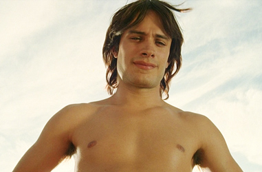
Gael García Bernal - Ángel / Juan / Zahara
Fele Martínez - Enrique Goded
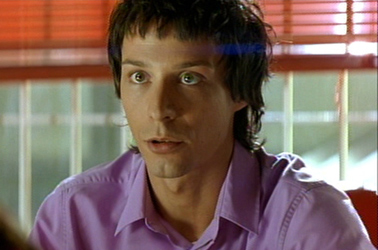
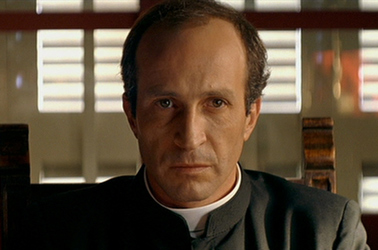
Daniel Giménez Cacho - Padre Manolo
Javier Cámara - Paca / Paquito
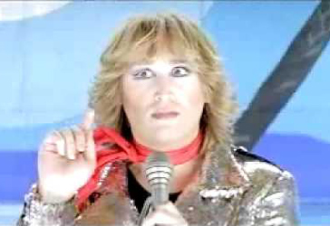
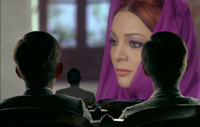
Sara Montiel - Soledad (archive footage)
Young Ignacio
Madre
80s biker
Boy
Sr. Manuel Berenguer
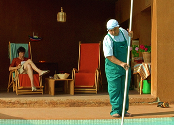
In 1980 Madrid, young film director Enrique Goded is looking for his next project when he receives the unexpected visit of an actor looking for work. The actor claims to be Enrique's boarding school friend and first love, Ignacio Rodriguez. Ignacio, who is now using the name Ángel Andrade, has brought with him a short story titled The Visit hoping that Enrique would be interested in making a film out of it giving him the starring role. Enrique is intrigued since The Visit describes their time together at the Catholic boarding school and it also includes a fictionalized account of their reunion many years later as adults.
The Visit is set in 1977. It tells the story of a transgender drag queen with the stage name Zahara, whose birth name is Ignacio. Zahara plans to rob a drunken admirer but discovers that the man is her boyhood lover Enrique. Next she visits her old school and confronts Father Manolo, who abused her when she was a boy. She demands one million pesetas from him in exchange for halting publication of her story The Visit. The story is set in a Catholic boarding school for boys in 1964. At the school, Ignacio, a young boy with a beautiful singing voice, is the object of lust of Father Manolo, the school principal and literature teacher. Ignacio falls in love with a young Enrique, and the two go the local cinema and grope each other. Manolo discovers them together that night. Although Ignacio allows Manolo to molest him in exchange for not punishing Enrique, he expels him nonetheless.
Enrique wants to adapt the story but balks at Ángel's condition to be cast as Zahara, feeling that the Ignacio whom he loved and the Ignacio of today are totally different people. He drives to see Ignacio's mother in Ortigueira, Galicia and learns that the real Ignacio has been dead for four years and that the man who came to his office is actually Ignacio's younger brother, Juan. Enrique's interest is piqued, and he decides to do the film with Juan in the role of Ignacio to find out what drives Juan. Enrique and Ángel start a relationship, and Enrique revises the script so that it ends with Father Manolo, whom Ignacio was trying to blackmail to get money for sex reassignment surgery, having Ignacio murdered. When the scene is shot, Ángel breaks out in tears unexpectedly.
The film set is visited by Manuel Berenguer, who is the real Father Manolo, who has resigned from Church duty. Berenguer confesses to Enrique that the new ending of the film is not far from the truth: the real Ignacio blackmailed Berenguer, who somehow managed to scratch together the money but also took an interest in Ignacio's younger brother, Juan. Juan and Manolo started a relationship and after a while realized they both wanted to see Ignacio dead. Juan scored some very pure heroin, so that his brother would die by overdose after shooting up. After the crime, the relationship disintegrates; Berenguer wants to continue the relationship with Juan, but Juan is uninterested. Berenguer claims that he will never let Juan go, and Juan threatens to kill him if Berenguer continues to pursue him. Berenguer attempts to blackmail Juan for his part in the murder of Ignacio. Enrique is shocked and not at all interested in Juan's weak vindications for what he did to his brother. Finally, before he leaves, Juan gives Enrique a piece of paper: a letter to Enrique that Ignacio was in the middle of typing when he died reading "I think I have succeeded..."
An epilogue states that after the release of the film Juan and Enrique both achieved great success, although Juan was later relegated to television acting after his career declined in the 1990s and killed Berenguer in a hit-and-run because of his continued blackmailing of him.
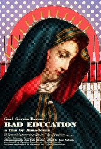
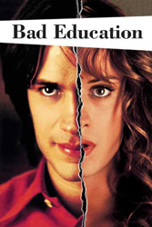
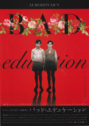
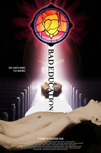
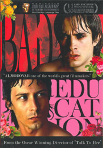
Pedro Almodóvar (1987) - The film repeats and expands the plot and characters of Pablo and Tina Quintero into the characters of Zahara and Enrique Goded.
Stanley Donen (1967) - Paquito (Javier Cámara) mentions this film.
Osvaldo Farrés - Performed by Sara Montiel
Totò Savio / Ambrosino